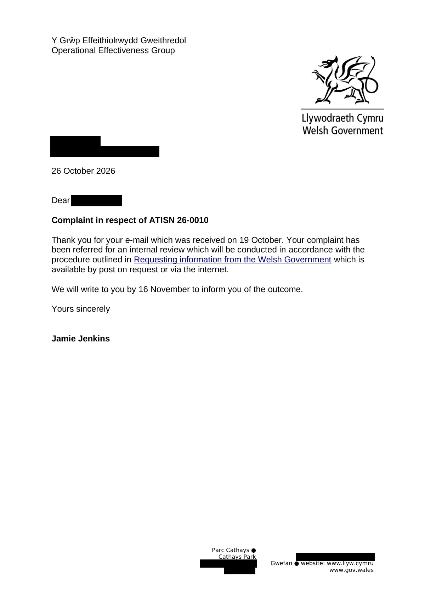

GHF-E106-R59-A1 acknowledgement only
Welsh Government: ATISN 26-0010 internal review acknowledged

Transcript
Requester [email redacted] 26October 2026 Dear Requester Complaint in respect ofATISN 26-0010 Thank you for your e-mail which was received on 19 October. Your complaint has been referred for an internal review which will be conducted inaccordance with the procedure outlined inRequesting information from the Welsh Governmentwhich is available by post on request or via the internet. We will write to you by 16 November to inform you of the outcome. Yours sincerely Jamie Jenkins
Artifact description
Acknowledges the 19 Oct complaint on ATISN 26-0010 (retention and destruction schedules) as an internal review; outcome promised by 16 Nov 2026.
| Catalogue ID | GHF-E106-R59-A1 |
|---|---|
| What it is | Document from Welsh Government / Cadw. Attached to an email received on 26 October 2026, their reference ATISN 26-0010. 1 page. |
| From | Welsh Government / Cadw |
| Email received | 26 October 2026 |
| Their reference | ATISN 26-0010 |
| Pages | 1 |
| File | ATISN 26-0010 - internal review - Acknowledgement.odt (158 KB) |
| State | Read |
Our integration
A one-page acknowledgement: the Welsh Government has treated the 19 October complaint about ATISN 26-0010 (retention and destruction schedules) as an internal review and promises an outcome by 16 November 2026.
Why it matters: ATISN 26-0010 asked for the schedules that would show whether the 1988 listing file was kept, transferred or destroyed. The first answer gave schedules but found no files under the farm name, Western Ground Rents Ltd or BP Properties Ltd (GHF-E106-R56-A1). The Wales Office review (GHF-E106-R58-A1) points to the same body as the paper files' destination.
Concern to test: whether the review searches paper transfer and disposal records, not only current registers.
What cuts against the case: an acknowledgement promises nothing about content, and 16 November is within the statutory review time. Nothing is late yet.
Related: GHF-E106-R63-A1 — Welsh Government: ATISN 26-0010 acknowledgement · The covering email · What They Don’t Say: WTDS-d262c862-1, WTDS-d3b374e7-1, WTDS-d3b374e7-2 · EV-0497 in the evidence catalogue · Timeline · Disclosure Dartboard